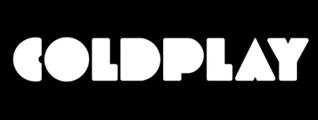
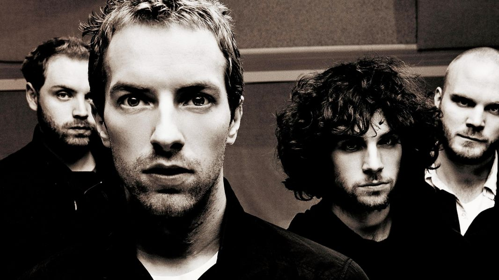
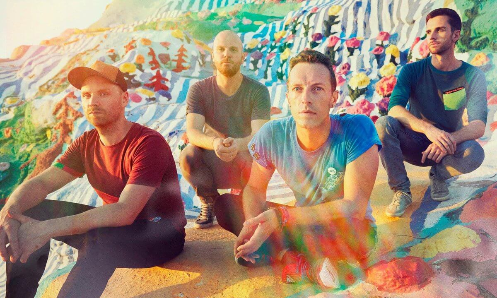
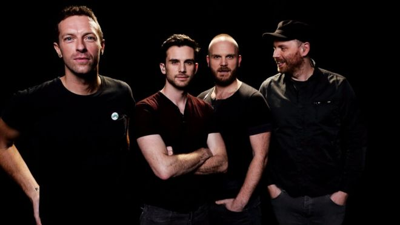

About Coldplay
Coldplay is a British rock band formed in 1996 by lead vocalist and keyboardist Chris Martin and lead guitarist Jonny Buckland at University College London (UCL). After they formed under the name Pectoralz, Guy Berryman joined the group as bassist and they changed their name to Starfish. Will Champion joined as drummer and backing vocalist, completing the lineup. Creative director Phil Harvey is often referred to as the fifth member by the band. The band renamed themselves "Coldplay" in 1998, before recording and releasing three EPs: Safety in 1998 and Brothers & Sisters and The Blue Room in 1999. The Blue Room was their first release on a major label, after signing to Parlophone.

Concert Tour
- Parachutes Tour (2000–01)
- A Rush of Blood to the Head Tour (2002–03)
- Twisted Logic Tour (2005–07)
- Viva la Vida Tour (2008–10)
- Mylo Xyloto Tour (2011–12)
- Ghost Stories Tour (2014)
- A Head Full of Dreams Tour (2016–)